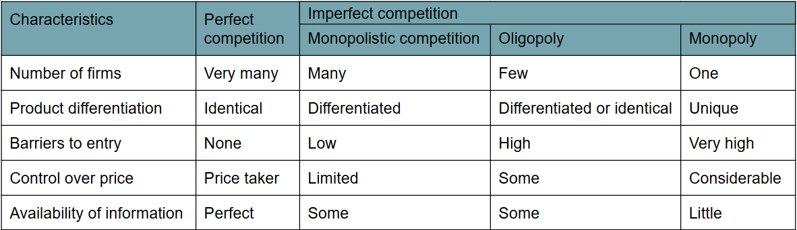
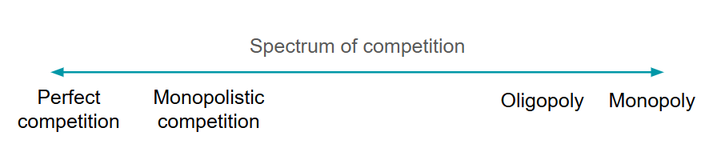
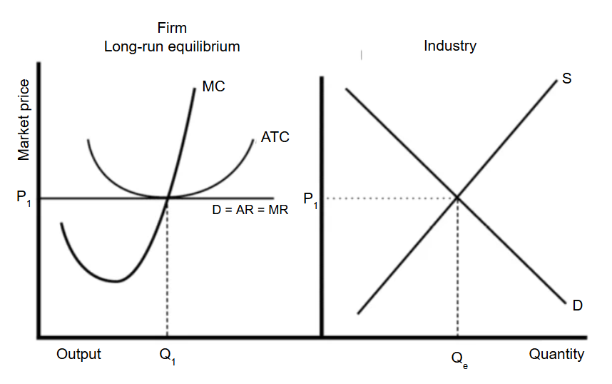
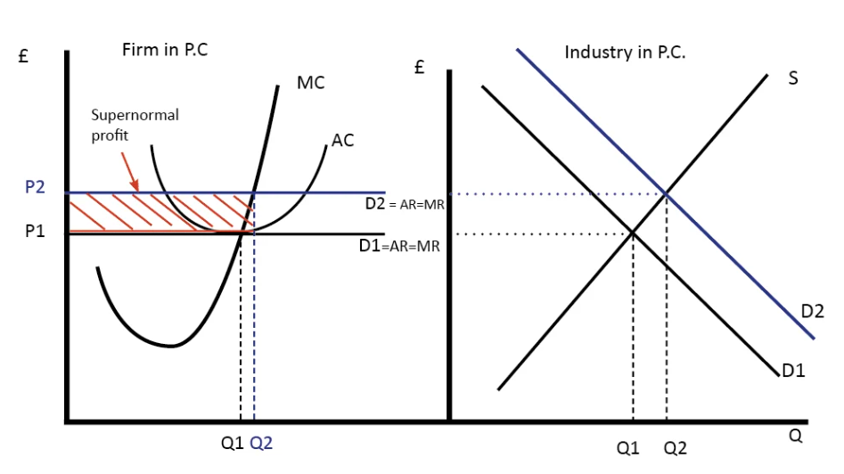
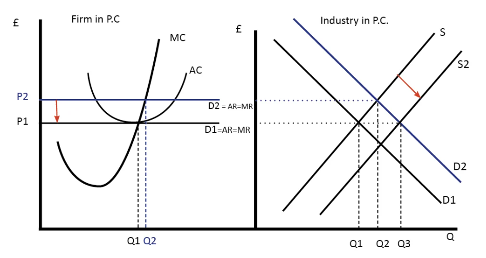
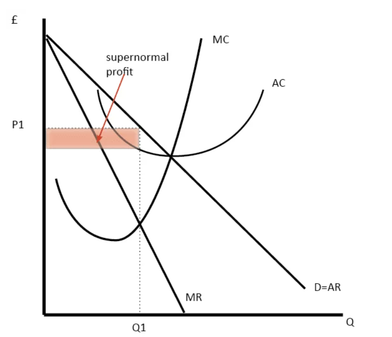
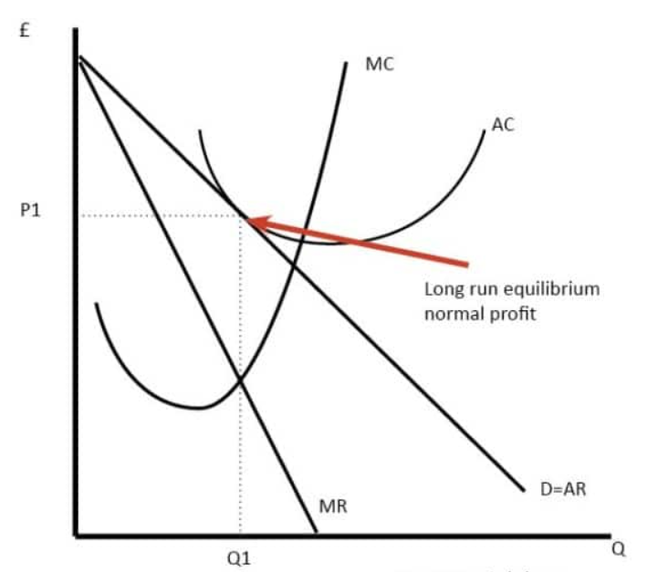
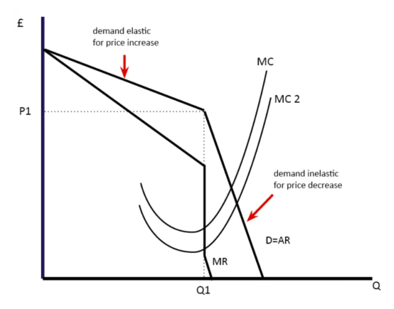
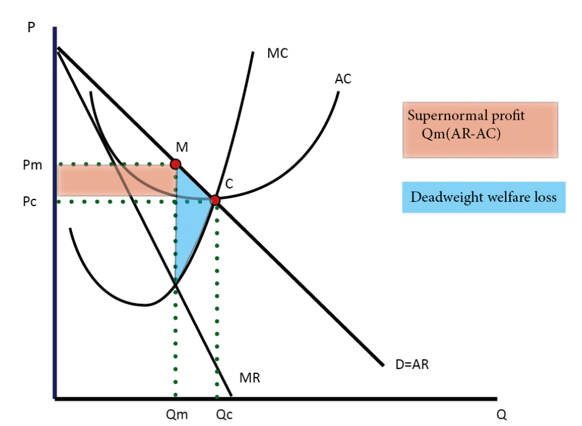
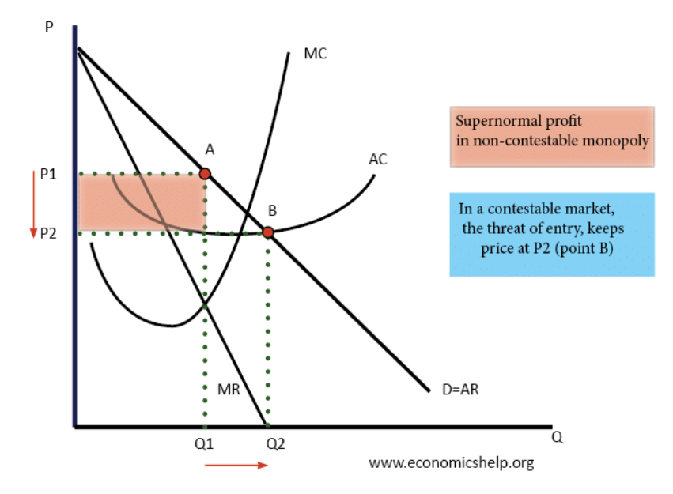

The term market structure describes the way in which goods and services are supplied by firms in a particular market. More specifically, it describes the characteristics of a market in terms of:
There are two main type of market structures: Perfect and Imperfect Competition.
Perfect competition is the ideal market structure where there are many firms, freedom of entry into the industry with all firms producing identical products. Firms are price takers and there is perfect information for all firms in the market.
Imperfect markets are any market structures except for perfect competition:


The existence of substantial barriers to entry into an industry differentiates oligopoly and monopoly from monopolistic competition and perfect competition.
Barriers to entry are a range of obstacles that deter or prevent new firms from entering a market to compete with existing firms. The construction and maintenance of these barriers can become part of the firm's behavior.
Where barriers to entry are strong, the market is likely to be dominated by a few large producers. Below are examples of barriers to entry:
This section will explore the 4 market structures more in depth.

The market price is set by the supply and demand of the industry (diagram on right). This sets the market equilibrium price of P1.
Individual firms (on the left) are price takers. Their demand curve is perfectly elastic.
A firm maximises profit at Q1 where MC = MR. At this price firms make normal profits because average revenue (AR) = average total cost (ATC)
It is possible that costs could be higher than the revenue. A firm can continue in production making short-run losses, as long as the price received covers AVC, usually the cost of wages and raw materials. This is known as the shut down price. In this situation, the firm's only hope is that market price will rise. When the price is less than the firm's AVC, and the revenue is lower than costs in the long run, firms will leave the industry. The loss of firms will raise the market price, allowing the remaining firms in the industry to make normal profit.
Supernormal profit will only be a feature of perfect competition in the short run. This is because its existence will act as an incentive for the entry of new firms. This means total supply will increase and price will start to fall.
Therefore in the longrun, firms will only make normal profits in a perfectly competitive market.
This concept will be shown in the following graphs:

Market demand rises from D1 to D2 causing the price to rise from P1 to P2.
Due to the rise in price to P2, profits are now maximised at Q2.
A firms marginal cost (MC) curve is effectively its supply curve
At Q2, (P, AR is greater than ATC) and therefore the firm now makes supernormal profit in the short run.

However, the supernormal profit encourages more firms to enter the market.
New firms enter (supply increases from S1 to S2) until the price falls to P1.
With price at P1, profits are maximised at Q1 and normal profits are made once again (AR=AC).
Efficiency of perfect competition:

Monopolistic competition in the short run
In the short run, the diagram for monopolistic competition is the same as for a monopoly.
The firm maximises profit where MR=MC. This is at output Q1 and price P1, leading to supernormal profit

Monopolistic competition in the long run
In the long-run, supernormal profit encourages new firms to enter. This reduces demand for existing firms and leads to normal profit.
A key point in both short and long run the firm is inefficient. This is because the firm operates above the minimum point of the ATC, which is productively inefficient. Additionally, the firm is not allocatively efficient as P > MC.
Efficiency of monopolistic competition:

In the kinked demand curve model, the firm maximises profits at Q1, P1 where the kink is.
Any change in MC, will not likely change the market price as firms do not want to lose market share by raising price. Prices will tend to stay the same and to change little over time.
If one firm increases the price, other firms won’t follow. For a price increase, demand is price elastic. If one firm cuts price, other firms will follow because they don’t want to lose market share. For a price cut, demand is price inelastic. This is why the demand curve is kinked.
The kinked demand curve makes certain assumptions:
There are many critisms regarding the kinked demand curve diagram. It does not explain how the price was arrived at in the first place, and where the kink should be. It also does not represent how firms behave in real oligopolistic markets - firms may actually engage in price competition.
Collusion in oligopolistic markets:
Collusion is an anti-competitive action by producers where large firms find that it is in their interest to co-operate with rivals.
Informal collusion is not illegal and usually takes the form of price leadership, where firms automatically follow the lead of one of the group. The price leader is invariably the dominant firm and has sufficient market power to determine price change that other firms follow. The objective is to maximise profit of the whole group by acting as a single seller.
On the other hand, a cartel is a formal price or output agreement between firms in an industry to restrict competition, which is illegal. By joining a cartel firms are operating as a single seller and maximising their profit.
Efficiency of oligopolies:

A monopolist will seek to maximise profits by setting the output where MR = MC. This will be at output Qm and Price Pm.
In a competitive market output will be at point C.
Compared to a competitive market, the monopolist increases price and reduces output.
Red area = Supernormal Profit (AR-AC) * Q
Blue area = Deadweight welfare loss (combined loss of producer and consumer surplus) compared to a competitive market.
In monopoly, there is no distinction between short run and long run because of the barriers that prevent entry of competitors.
Disadvantages of monopolies
Advantages of monopolies
A natural monopoly occurs when the most efficient number of firms in the industry is one.
A natural monopoly will typically have very high fixed costs meaning that it is impractical to have more than one firm producing the good. As output increases, average fixed costs will decline.
An example of a natural monopoly is tap water. It makes sense to have just one company providing a network of water pipes and sewers because there are very high capital costs involved in setting up a national network of pipes and sewage systems. The is little econmic logic in having rival firms competing, especially with government subsidies required to keep the system functioning at a social optimum level.
Natural monopolies are uncontestable and firms have no real competition. Therefore, without government intervention, they could abuse their market power and set higher prices. Therefore, natural monopolies often need government regulation.
A contestable market is not a market structure. But it is a set of conditions that can apply in any of the three imperfect market structures.
A contestable market is a market where the threat of potential competitors entering the market keeps prices low and behaviour competitive.
This threat of entry is sufficient to keep prices close to a competitive equilibrium and profits low – otherwise, new firms enter. In a contestable market, it is not the number of firms that is important, but the ease by which new firms can enter the market.
A market is perfectly contestable where:

If the market was a monopoly with high barriers to entry, the firm would maximise profits at P1, Q1 (point A).
If the market became perfectly contestable with freedom of entry and exit, then the existing firm would have an incentive to cut prices to P2 (point B) - Otherwise, new firms would enter the market until normal profits are made.
Therefore, contestable markets will have lower profits than monopoly.
Efficiency of contestable markets:
In theory, a perfectly competitive market is most similiar to a perfectly contestable market because there are no barriers to entry and exit.
To increase contestability of markets governments can remove the barriers to entry/exit by implementing policies of deregulation.
Market structure: the way in which a market is organised in terms of certain characteristics which can be used to explain the behavior of firms in a market.
Perfect competition: an ideal market structure that has many buyers and sellers, identical products, no barriers to entry; sometimes reffered to as total competition.
Imperfect competition: any market structure except for perfect competition.
Monopolistic competition: a market structure where there are many firms, differentiated products and few barriers to entry.
Oligopoly: a market structure with few firms and high barriers to entry.
Barriers to entry: restrictions that prevent new firms entering an industry.
Pure monopoly: where there is just one seller in the market.
Natural monopoly: where with falling long-run average costs, it makes sense to have only one firm providing the good/service.
Predatory pricing: where a firm sells its goods below average variable cost to force competitors out of the market.
Limit pricing: where firms deliberately lower prices and abandon a policy of profit maximisation to stop new firms from entering a market.
Collusion: an anti-competitive action by producers.
Barrier to exit: a restriction that prevents a firm leaving a market.
Shut-down price: a firm will stop production when price falls below average variable costs.
Price competition: where firms compete on price to attract customers.
Non-price competition: when firms use methods other than price to attract customers from rival producers.
Kinked demand curve: a traditional model of a firm's behaviour in oligopoly.
Price rigidity: where prices are unchanged despite a change in costs.
Price leadership: a situation in a market whereby a particular firm has power to change prices, the result of which is that competitors follow this lead.
Cartel: a formal agreement between firms to limit competition by limiting output or fixing prices.
X-inefficiency: where the firm's costs are above those experienced in a more competitive market.
Contestable market: a market where entry is free and exit is costless.
Contestability: the extent to which barriers to entry into a market are free and the exit from the market is costless.
Deregulation: when barriers to entry into an industry are removed.